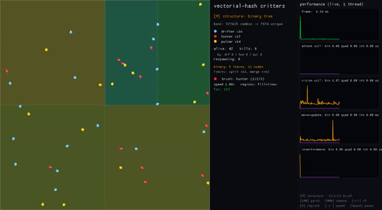
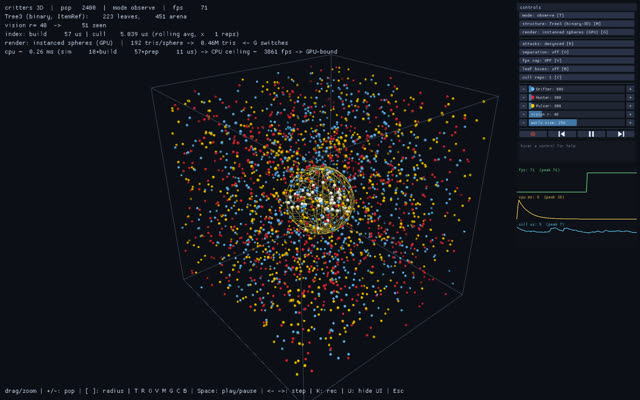
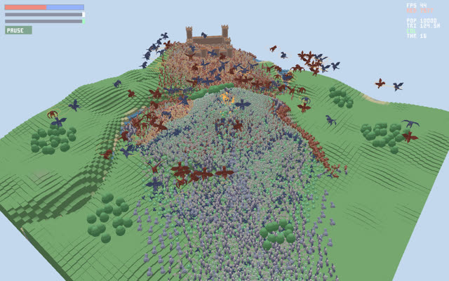
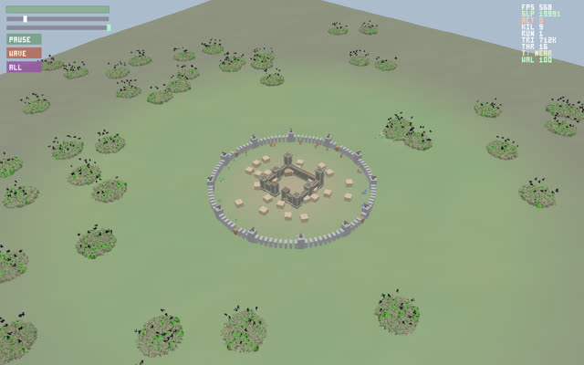
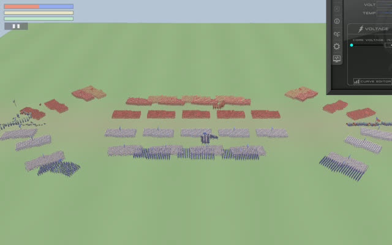
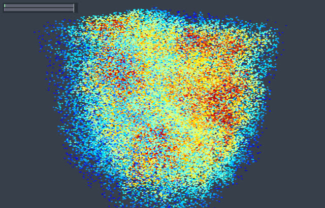
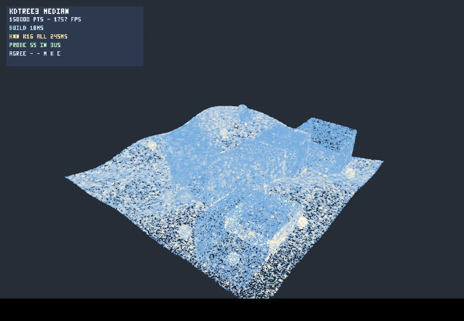
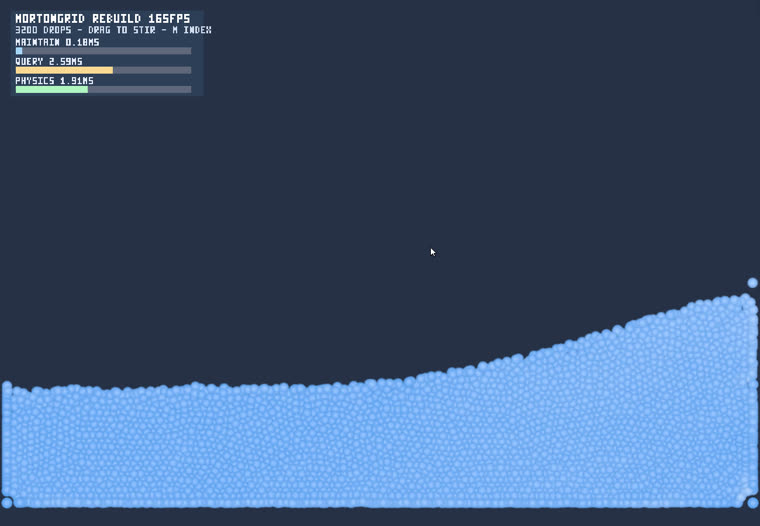
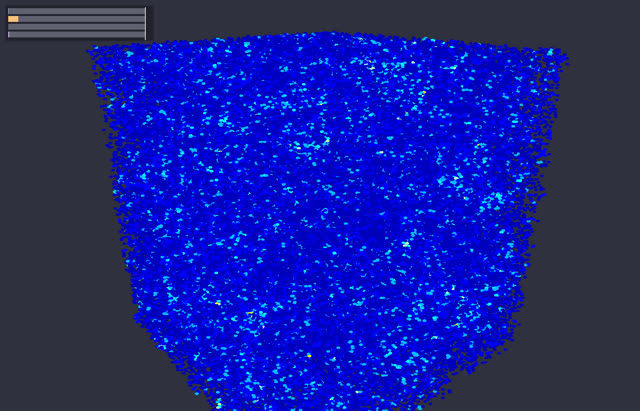

Live demos for vectorial-hash-kit, a Rust spatial-index library. Watch the index split & merge in real time as critters move, hunt and attack — running right here in your browser via WebAssembly.









Click the canvas to give it keyboard focus. The first load fetches ~1 MB of WebAssembly. Needs a WebGL2-capable browser. On a phone, tap ⤢ (top-right) to hide the chrome and go fullscreen — the 2D demo scales to fit any screen.